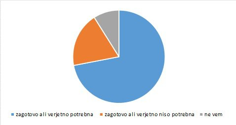
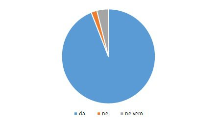

Anketa, ki smo jo sestavile, je bila namenjena dijakom. V anketi je sodelovalo 161 dijakov. Kot smo pričakovale, so bili nekateri pri reševanju ankete neresni. Z anketo smo želele izvedeti, koliko dijakov je seznanjenih s feminizmom, kakšno je njihovo mnenje o njem, ali menijo, da je enakopravnost spolov dosežena, ali so seznanjeni z deležem žensk v slovenskem parlamentu, gospodarstvu in ali se jim zdi delež dovolj velik. Predvsem pa smo želele izvedeti, ali je njihov odnos do feminizma pozitiven ali negativen.
1. Kaj je zate feminizem?
Večina meni, da je feminizem gibanje za pravice žensk ali moč ženskam in boj za enakopravnost spolov. Nekateri anketiranci odgovora na to vprašanje niso imeli, drugi pa so omenjali tudi gibanje in družbeno obliko. V skladu s pričakovanji je bilo nekaj odgovorov nezrelih, ki jih zato nismo upoštevale.
2. Če feminizem razumemo kot socialno gibanje, ki se osredotoča na zmanjšanje in izničenje neenakosti med spoloma ter se posveča tudi pravicam in položaju žensk v družbi in kulturi, ali bi ga ocenil/a kot nekaj:
3. Ali misliš, da je bila enakopravnost med spoloma dosežena?
4. Ali misliš, da so potrebna nadaljnja feministična prizadevanja za doseganje enakopravnosti spolov?
5. Delež slovenskih evropskih poslank je 37,5%. Ali misliš, da je na tem položaju ustrezno število žensk?
6. Delež poslank državnega zbora Republike Slovenije je slabih 36%. Ali misliš, da je na tem položaju ustrezno število žensk?
7. Delež ministric Republike Slovenije je 50%. Ali misliš, da je na tem položaju ustrezno število žensk?
8. Delež državnih sekretark je 46,15%. Ali misliš, da je na tem položaju ustrezno število žensk?
9. Delež županj je 5,66%. Ali misliš, da je na tem položaju ustrezno število žensk?
10. Delež žensk na visokih vodstvenih položajih v gospodarstvu je približno 20%. Ali misliš, da je na teh položajih ustrezno število žensk?
11. Ali misliš, da je v naši družbi veliko nasilja nad ženskami (fizičnega, psihičnega...)?
12. Ali misliš, da imajo ženske v nekaterih državah še vedno manj pravic?
13. Kdo doma opravlja naslednja gospodinjska opravila?